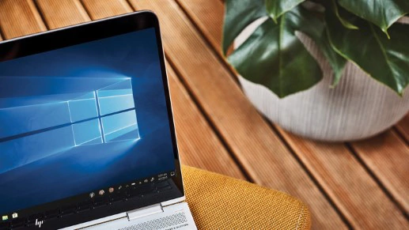

El sistema operativo Windows 10 Home ofrece seguridad integrada y aplicaciones como Correo, Calendario, Fotos,etc.Para que sea productivo en un entorno seguro.
Una experiencia conocida y que te encanta
El menú Inicio y la barra de búsqueda te permiten encontrar las cosas rápidamente. Organiza, edita y comparte tus fotos y videos con facilidad. Navega por Internet más rápido con Microsoft Edge.
La seguridad es estándar
Ten la tranquilidad de saber que Windows incluye características de seguridad integradas, como las protecciones de firewall e Internet para ayudar a protegerte contra virus, malware y ransomware.

Nuevas formas de ser productivo
Haz las cosas más rápido con Timeline y Focus Assist. Y con la aplicación de tu teléfono6, no son necesarios procesos complejos: simplemente accede a tus textos y fotos directamente desde tu computadora.